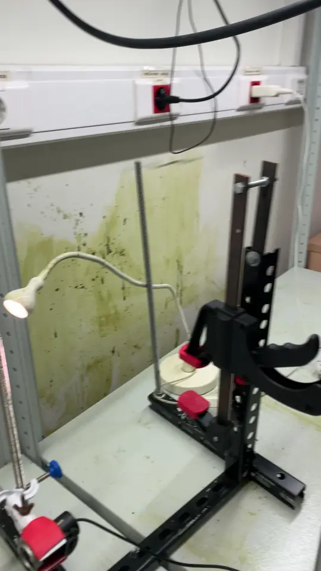

Research / Skoltech
Research.
Physical models and laboratory experiments to understand vanadium flow batteries.
MSc Digital Electrical Energy · Skoltech · Supervisors: Prof. Mikhail Pugach & Prof. Federico Ibanez

Main research · In progress
Flow-battery modelling
and diagnostics.
Can physical model parameters reveal what is changing inside a battery? My main research combines parameter identification, physics-constrained neural methods and a controlled three-membrane comparison.
The first Nafion-117 cycling run is complete, with initial voltage, capacity and efficiency analysis. The remaining membrane runs are planned; interpretation of the observed loss is in progress.
Explore the main research
Oxidation-state experiment · Analysis in progress
Understanding
the electrolyte.
This study examines how the starting oxidation state of vanadium affects cycling, using electrical measurements, colour sensing, camera monitoring and titration.
The first ten-cycle run is complete. Chemical, optical and volume analysis is in progress; the wider six-condition series is planned.
Explore the oxidation-state study